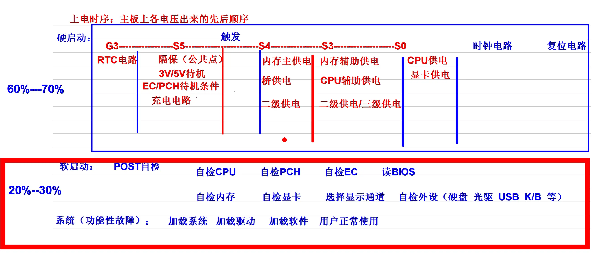
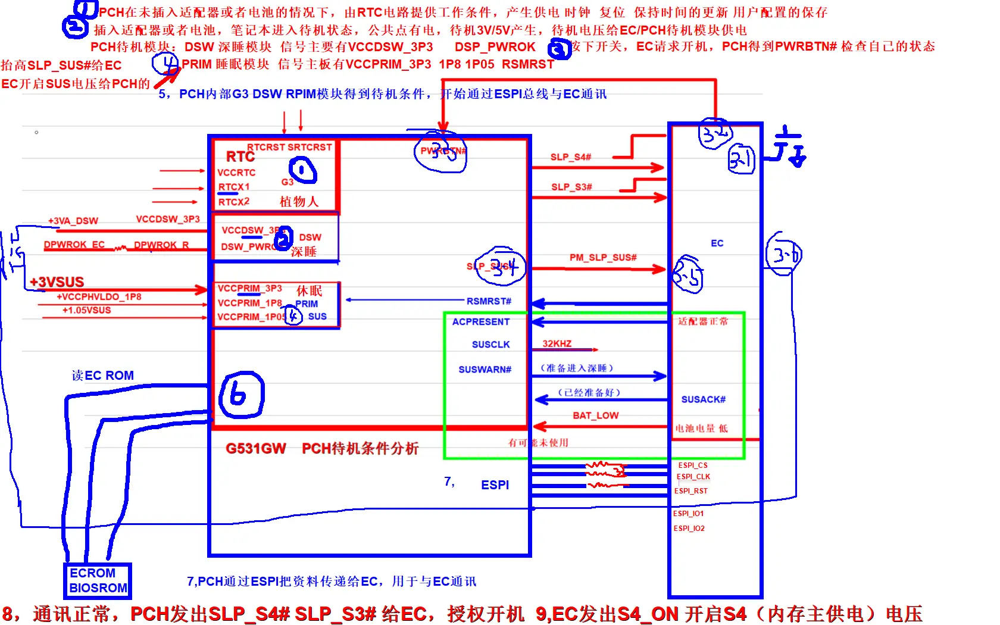

上电时序与开机流程¶
笔记本从插电到正常使用的完整上电先后顺序，以及故障排查的优先级指引。
通用上电时序¶
主板上各电压产生的先后顺序，按 ACPI 电源状态划分：

硬启动阶段（故障占比 60%~70%）¶
这是故障最高发区域——大部分不开机问题都出在这里。
| 电源状态 | 上电顺序 |
|---|---|
| G3 完全断电 | RTC 电路（插电就工作的实时时钟） |
| S5 待机 | 隔保（公共点）→ 3V/5V 待机 → EC/PCH 待机条件 → 充电电路 |
| ⚡ 触发 | 按下开机键 — 待机转开机的分界点 |
| S4 休眠 | 内存主供电 → 桥供电 → 二级供电 |
| S3 睡眠 | 内存辅助供电 → CPU 辅助供电 → 二级/三级供电 |
| S0 正常运行 | CPU 供电 → 显卡供电 → 时钟电路 → 复位电路 |
💡 硬启动收尾：时钟电路和复位电路是最后的关卡，这两步过了才算硬启动完成。
软启动阶段（故障占比 20%~30%）¶
供电、时钟、复位都正常后，主板开始硬件自检：
系统阶段（功能性故障）¶
硬件自检全部通过后进入系统加载：
这个阶段的故障属于系统、驱动、软件类问题，不属于硬件上电/自检故障。
PCH 待机条件分析（G531GW 实战案例）¶
以下是以华硕 G531GW 为例的 PCH 待机开机条件分析，梳理了 PCH 内部各电源域与 EC 的信号交互：

PCH 内部电源域¶
PCH 内部分为三个不同休眠等级的供电分区：
| 分区 | 别称 | 触发条件 | 说明 |
|---|---|---|---|
| RTC | 「植物人状态」 | CMOS 电池有电就工作 | 保持时间更新、保存 BIOS 设置的最低功耗模块 |
| DSW 深睡 | 深度睡眠 | 插电后最先启动 | VCCDSW_3P3、DSW_PWROK 就绪后激活 |
| PRIM/SUS 浅休眠 | 准备开机 | PCH 收到开机请求后 | VCCPRIM_3P3/1P8/1P05 供电就绪 |
EC ↔ PCH 关键交互信号¶
| 信号 | 方向 | 作用 |
|---|---|---|
| PWRBTN# | EC → PCH | 开机请求：EC 检测到按键后发给 PCH |
| RSMRST# | EC → PCH | 待机就绪：EC 通知 PCH 所有待机供电正常 |
| SLP_S4# / SLP_S3# | PCH → EC | 开机授权：PCH 自检正常后允许 EC 开启后续供电 |
| PM_SLP_SUS# | PCH → EC | 待机睡眠许可 |
| ESPI 总线 | 双向 | PCH ↔ EC 专用通讯总线（ESPI_CS/CLK/RST/IO） |
上电流程（图上标注的步骤）¶
- CMOS 电池供电 → RTC 电路工作
- 插入适配器/电池 → 待机 3V/5V 产生 → EC/PCH 待机模块供电
- PCH DSW 模块激活（VCCDSW_3P3、DSP_PWROK）→ 按下开关，EC 发 PWRBTN# 请求开机
- PCH PRIM 模块激活 → RSMRST 抬高 → SLP_SUS# 给 EC → EC 开启 SUS 电压
- PCH 内部 G3 → DSW → PRIM 模块全部就绪 → ESPI 总线开始通讯
- ESPI 通讯正常 → PCH 发出 SLP_S4# / SLP_S3# 授权开机
- EC 发出 S4_ON → 开启内存主供电等后续电压